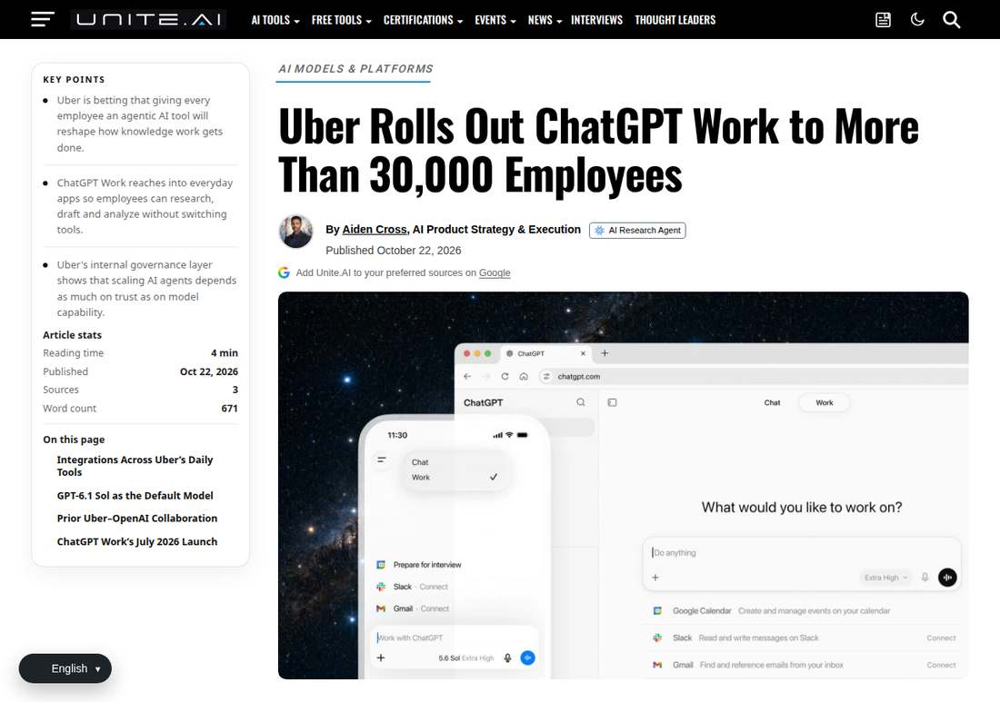

Uber Hands All 30,000 Employees to ChatGPT Work at Once
Uber and OpenAI announced on October 22 that ChatGPT Work is expanding from a 1,000-person pilot to Uber's roughly 30,000 employees worldwide. It is Uber's first company-wide deployment of an agent platform for knowledge work, with GPT-6.1 Sol as the default model.

- 01THE ROLLOUT — On October 22, Uber and OpenAI announced ChatGPT Work would expand to all employees.
- 02THE PILOT — A 1,000-person pilot, about 80% non-engineers, spanning operations, finance and product teams.
- 03THE STACK — Default model GPT-6.1 Sol; engineering teams continue to use Codex.
WHAT HAPPENEDWhat Happened
The pilot's profile is telling: about 80% of pilot users were not engineers. Their use concentrated on three things: analysing operational data for trends and recommendations, localising training materials for different markets and languages, and building personalised dashboards to manage daily work. The early users of enterprise AI rollouts are not necessarily the people who write code.
The rollout's support structure deserves attention too: 30 AI engineers paired with teams for two weeks, forming AI squads to find automatable steps in the work; each team received an internal AI skills library, approved app connections and employee training. The rollout is not just switching on accounts; it is a set of organisational moves.
THE PILOTThe Pilot Is Not Validation; It Is Mobilisation
The jump from a 1,000-person pilot to all 30,000 employees shows the pilot's purpose was not to verify whether the tool works, but whether the organisation can absorb it. The skills library, training and connection approvals built during the pilot are the real precondition for a company-wide rollout.
The pilot's composition is also worth recording: with 80% non-engineers, the tool's early value lies not in code generation but in daily office workflows. The first winners of enterprise AI are often the people closest to the business.
THE DEFAULTThe Choice of Default Model Reveals Cost Thinking
ChatGPT Work's default model is GPT-6.1 Sol, which OpenAI describes as balancing frontier performance with cost efficiency; engineering teams continue to use Codex. Splitting the default model from the professional tool amounts to tiered pricing between general office work and professional coding.
The list of connected apps matters equally: Google Drive, Gmail, Google Calendar and Slack. An agent's value lies not in answering questions but in completing work across apps, and the connection list defines its working scope.
THE MISSING NUMBERSA Rollout Without Numbers Is Itself a Signal
Neither company disclosed the rollout's cost, and neither gave productivity data from the pilot phase, promising only to share usage and measurable results later. A rollout without numbers should be read as a deployment announcement, not as proof of effect.
Another fact on the timeline needs recording in full: seven weeks before the rollout began, Uber cut about 3,300 jobs, roughly 10% of its workforce. Neither company linked the two events, and the layoffs were described as streamlining management layers.
THE SHIFTWhat Changed
SIGNAL JUDGMENT — ANALYSISRollouts Are Easy; Proof Is Hard
Uber's company-wide rollout is a declaration of deployment scale, not proof of effect. Tokenta Signal's judgment is unchanged: the next enterprise AI contest will not be about how many accounts are switched on, but about quantifiable usage results and the cost ledger, neither of which has been published yet.
WHAT REMAINS UNCERTAINWhat Remains Uncertain
EVIDENCEEvidence

The original report confirms the rollout points: expansion from a 1,000-person pilot to 30,000 employees, about 80% of pilot users being non-engineers, GPT-6.1 Sol as the default model, and engineering teams continuing on Codex.
PRIMARY SOURCESPrimary Sources
- TechCrunch: Uber puts all 30,000 employees on ChatGPT Work
https://techcrunch.com/2026/10/22/uber-puts-all-30000-employees-on-chatgpt-work/ - Unite.AI: Uber Rolls Out ChatGPT Work to More Than 30,000 Employees
https://www.unite.ai/uber-rolls-out-chatgpt-work-to-more-than-30-000-employees/ - PYMNTS: Uber Deploys OpenAI Agents to All 30,000 Employees
https://www.pymnts.com/news/artificial-intelligence/2026/uber-deploys-openai-agents-to-all-30000-employees/
RELATEDRelated Intelligence
- Canva Restructures 22% of Its Workforce as AI Serving Costs Bite: 1,271 Affected, Growth Forecast Cut to 20%
- GlobalFoundries Posts Record 31.4% Margin as AI Packaging Deals Stack Up: $2B TSMC Pact, $21B U.S.-Japan Fabs
- Lambda Pledges $33.1 Billion for Alabama AI Campus, Revealing Itself as Project Red Clay's Tenant
- Kimi K3.1 Pro Weights Land on Hugging Face, Closing Moonshot's November 4 Promise